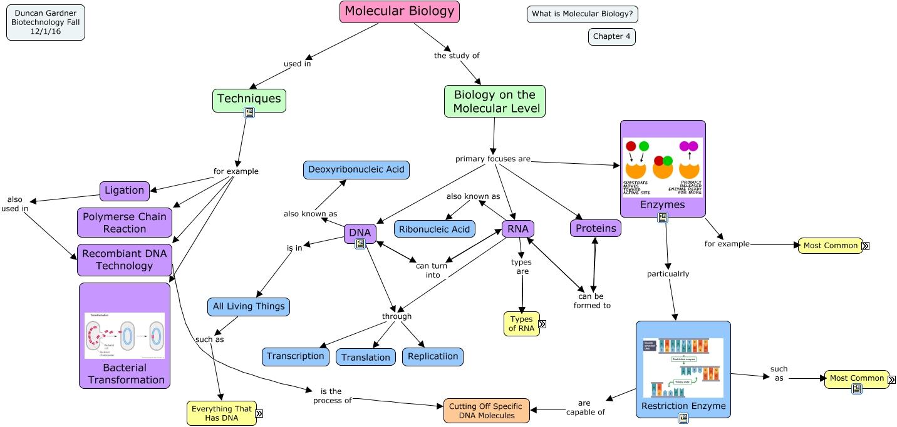

WARNING:
JavaScript is turned OFF. None of the links on this concept map will
work until it is reactivated.
If you need help turning JavaScript On, click here.
This Concept Map, created with IHMC CmapTools, has information related to: Chapter4, RNA types are mRNA, DNA is in All Living Things, Restriction Enzyme such as NotI, DNA can turn into RNA, Enzymes particualrly Restriction Enzyme, Techniques for example Ligation, Techniques for example Bacterial Transformation, DNA through Transcription, All Living Things such as Bacteria, Biology on the Molecular Level primary focuses are DNA, Recombiant DNA Technology is the process of Cutting Off Specific DNA Molecules, RNA through Transcription, Biology on the Molecular Level primary focuses are Proteins, All Living Things such as Everything That Has DNA, Enzymes for example Lyases, Enzymes for example Oxidoreductases, Proteins can be formed to RNA, Ligation also used in Recombiant DNA Technology, Enzymes for example Ligases, Restriction Enzyme are capable of Cutting Off Specific DNA Molecules
